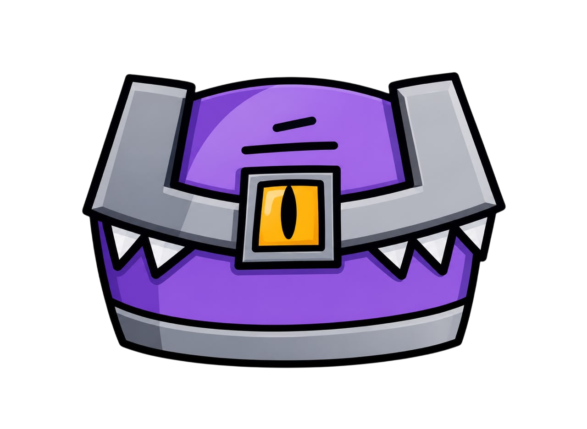
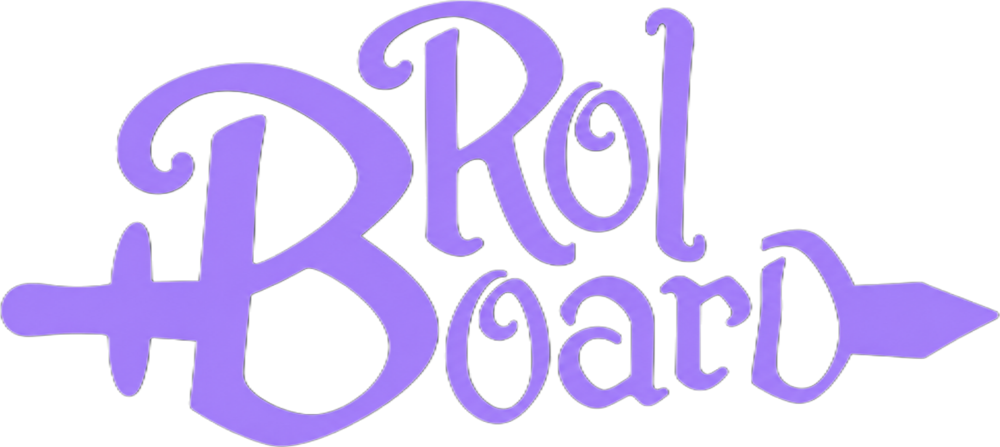
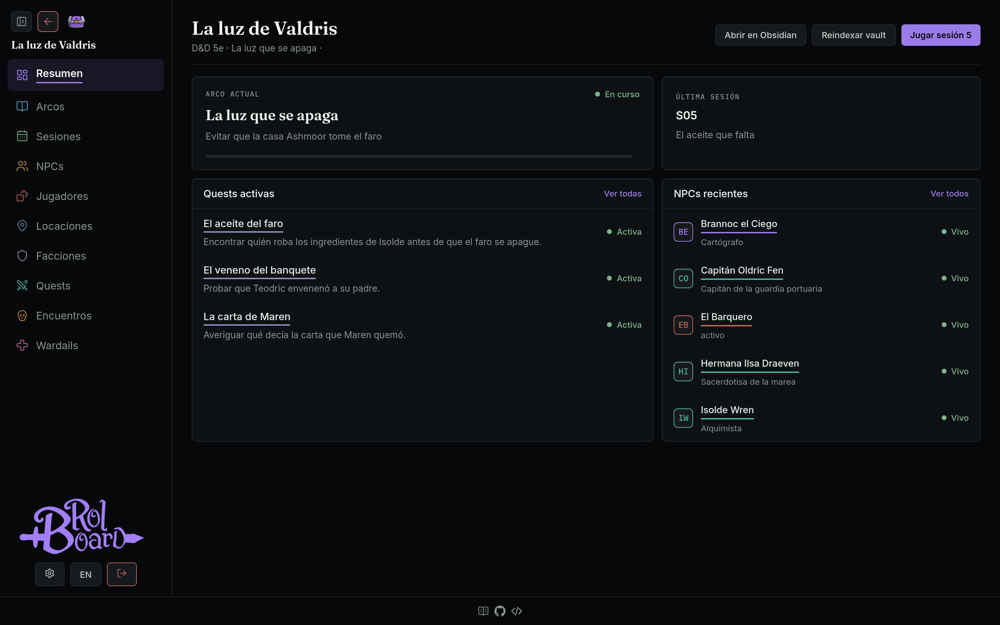
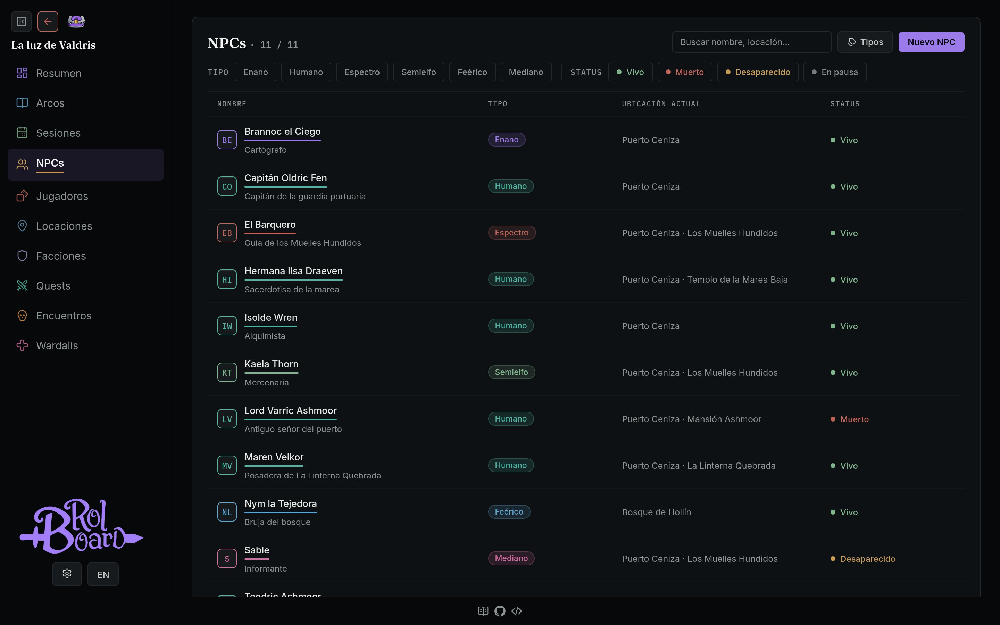
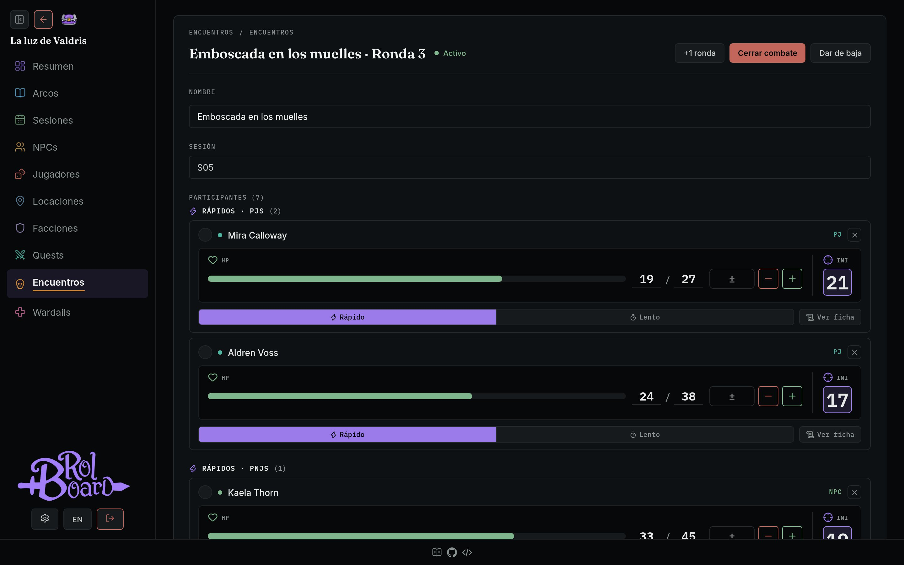
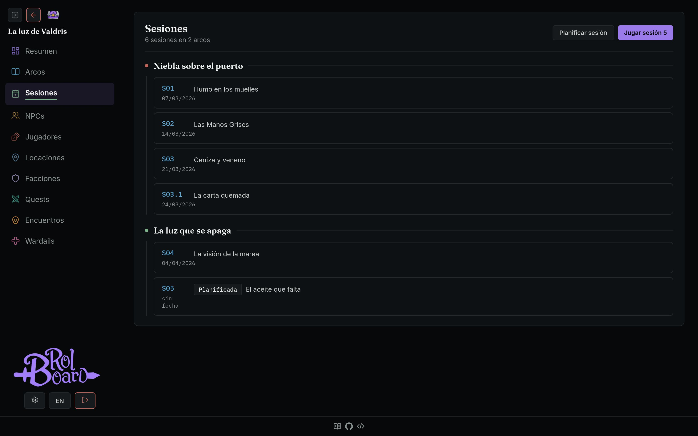

Windows
Descargar para WindowsNo está firmado: si Windows muestra un aviso, elige Más información → Ejecutar de todas formas.


Sesiones, arcos, NPCs, locaciones, facciones, quests y un tracker de combate. Rolboard guarda la historia de tu campaña para que tú te ocupes de contarla.

Qué hace
Planifica la próxima sesión, marcala como jugada y anota el resumen. Todo queda ordenado en una línea de tiempo por arco.
Tipos propios, estado, ubicación, facción y en qué sesiones aparecieron. Encuentras a cualquiera en segundos.
Regiones, ciudades y lugares anidados, facciones con sus miembros y quests con estado y prioridad.
Iniciativa, puntos de vida y turnos rápidos o lentos para PJs, NPCs y enemigos genéricos. Sin reglas atadas a ningún sistema.
Los temas sensibles de la mesa, escritos una vez y siempre a la vista cuando juegas la sesión.
Sin cuentas ni nube. La app de escritorio guarda todo en tu computadora; si prefieres, la instalas en tu servidor con Docker.
Elenco
Filtra por tipo o estado, busca por nombre o lugar y abre la ficha con su descripción, ubicación y relaciones. Los tipos son tuyos: humano, spren, monstruo o lo que tu mundo necesite.

Combate
Suma participantes, ajusta la vida con un clic y avanza rondas. Rolboard ordena los turnos; las tiradas y las reglas siguen siendo de tu mesa.

Historia
Sesiones e interludios agrupados por arco, con fecha y título. La próxima sesión queda planificada y lista para jugar.

Obsidian
Apunta Rolboard a tu vault y toca Reindexar. Tus notas de NPCs, locaciones, facciones, personajes, arcos y sesiones se convierten en fichas. Rolboard solo lee: nunca modifica tus notas.
Mi campaña/ ├── Arcos/ → arcos ├── NPC/ → NPCs ├── Locaciones/ → locaciones ├── Grupos/ → facciones ├── Jugadores/ → personajes └── Sesiones/ → sesiones
No es un VTT ni una hoja de personaje. No trae reglas cargadas ni tira dados. Es el cuaderno de quien dirige: un lugar para guardar la historia, no para jugarla.
Sí, y lo va a seguir siendo. Rolboard es de código abierto bajo licencia MIT: no hay cuentas, planes pagos ni publicidad. Puedes leer el código, compilarlo tú mismo o adaptarlo a tu mesa.
Con cualquiera. Rolboard no trae reglas ni tira dados: guarda la historia de la campaña. Los atributos y habilidades son campos libres que defines tú, y el tracker de combate admite iniciativa numérica o turnos rápidos y lentos. Se usó con D&D y con el juego de rol de Cosmere, pero sirve para cualquier sistema.
No. Rolboard es la herramienta de quien dirige: no hay vista ni cuentas para jugadores, así que tus notas, secretos y planes quedan solo para ti.
En tu computadora. La app de escritorio guarda todo en una base
SQLite dentro de tu carpeta de usuario
(~/.config/rolboard en Linux,
%AppData%\rolboard en Windows), junto con las
imágenes que subas. No hay cuentas, servidores ni nube: para hacer
un backup alcanza con copiar esa carpeta.
Sí. La app de escritorio corre entera en tu computadora y tus datos nunca salen de ahí. Solo necesitas conexión para descargarla y para abrir los links externos, como el repositorio o la documentación.
Descarga la versión nueva y reemplaza el ejecutable anterior. Tus campañas viven en tu carpeta de usuario, separadas de la app, así que no se pierden al actualizar. La versión actual aparece en la sección de descargas.
La app de escritorio funciona en una sola computadora. Si quieres consultar la campaña desde la tablet o el celular durante la partida, instala la versión Docker en un servidor: se usa desde el navegador de cualquier dispositivo de tu red, con clave de admin.
Por ahora no: la app no está probada ni firmada para Mac. Si tienes un servidor o una computadora siempre encendida, puedes instalar la versión Docker y usarla desde el navegador del Mac, o de cualquier otro dispositivo de tu red.
No. Rolboard funciona por su cuenta: puedes crear campañas, NPCs, locaciones y sesiones directamente en la app. Si ya llevas tu campaña en Obsidian, apúntalo a tu vault para importar tus notas; cada vez que reindexas se traen los cambios, y desde cada ficha puedes ver la nota completa. Rolboard solo lee: nunca modifica tu vault.
Si algo no funciona o se te ocurre una mejora, abre un issue en GitHub. Antes, revisa si ya hay uno parecido: puedes sumarle tu caso.
Descargar
Rolboard es de código abierto. Elige cómo usarlo.
No está firmado: si Windows muestra un aviso, elige Más información → Ejecutar de todas formas.
Necesita libwebkit2gtk-4.1. Dale permiso de
ejecución con chmod +x y ábrelo.
Para usarlo desde la tablet o el celular en la mesa, con clave de admin y código por campaña.
Versión actual: · Todas las versiones